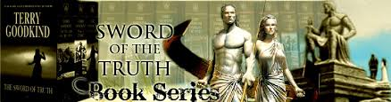
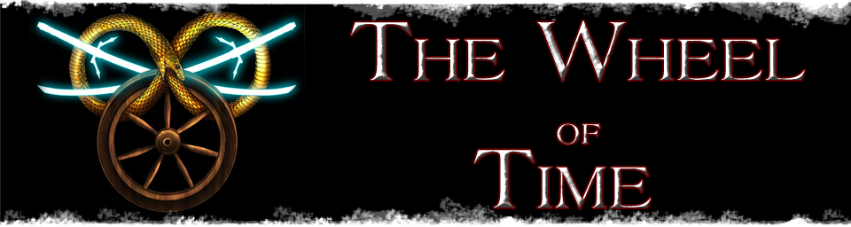
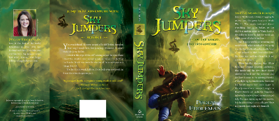

History of Hobbies
by Lance Eddleman
The Saga of Recluce

Recluce:
Book one "THE MAGIC OF RECLUCE" is a great book, do NOT read it first!! If you are interested in this series please use the link for the chronology. Reading the books in the order they were written is very frustrating or it was to me. I nearly gave up on the series. After finding the chronology list and starting over I absolutely love this series!
My Thoughts:
Let me start of with OMG! I love this series. Don't get me wrong there is a lot of great writing out there but this series really speaks to me. Some of the most enjoyable books in this series is when Mr. Modesitt retells the same time line but from the other faction's point of view.
It is so easy to side with the book's main characters and you really get the feel of what they are trying to do, then in the next book or even later in the same book you get that total slap in the face when you find yourself cheering for the opposite faction.
Credits:
Initial blurb from Recluse book 1, information and images accredited to and property of
© 2006-2015 - by L.E. Modesitt, Jr. Tor® and Forge® are trademarks of Tom Doherty Associates, LLC,
and are registered in the U.S. Patent and Trademark Office.
The Sword of Truth
Sword of Truth:
This is a high fantasy series that follows the life of one specific person. It has multiple types of magic systems which allows the writer to get very creative and add new elements as needed. At first glance it may appear like many others in that genre but It is anything but.
The series currently has 14 novels and will take you to nearly every emotion you can think of. Pick up this series if you have a long vacation ahead of you!

My Thoughts:
I have been reading the sword of truth since early 2000 I enjoy the series so much that each time Mr. Goodkind releases a new book I re-read the entire series up to that point before reading the new one.
The depth of characters as well as the details of the landscape and magic system are continually compelling with each new book adding or twisting the system enough to allow for future changes without ever taking away from the raw power they started with.
Credits:
Initial blurb from wikipedia, information and images accredited to and property of
© Terry Goodkind. Revel Studios Tor® Publishing registered in the U.S. Patent and Trademark Office.
The Wheel of Time
The Wheel of Time:
The Wheel of Time is one of literature’s greatest achievements in epic fantasy. It was written by the late Robert Jordan, and completed posthumously by his successor, Brandon Sanderson.
There are fourteen books in the series, all of which continue the same story, weaving towards the ultimate climax. Books 12 through 14 were completed by fantasy author Brandon Sanderson, who was chosen by Robert Jordan's widow after he passed away. dragonmount.com

My Thoughts:
When I first started reading WOT I was quickly captured but the depth characters as well as the world in which they lived. I have to tell you though after the first couple of books I started to get a little worried, the detail and sheer number of what I considered "Main" characters was growing so fast if was hard to keep track of them all.
As I continued through books 4,5,6 I got discouraged because of the style of Mr. Jordan writing, where he would bring a character line to a climax but then jump to a different character. I continued to push on knowing that he had to come back to those pivotal moments. I was not disappointed!
With each new book brought more history more characters and more details I found myself knowing exactly where the character left off last time we saw him/her and how they fit into the grand scheme of things.
It is a wonderful and dramatic series that I will cherish forever. Both Mr. Jordan and Mr. Sanderson have done an outstanding job and I am delighted that I was pointed to this series and to have it as part of who I am.
Credits:
© 1998 - 2014 Argonaut Media Network.
The Wheel of Time books and franchise are © Robert Jordan.
Digital Millennium Copyright Act Information
Sky Jumpers Series
Sky Jumpers:
Escape one danger. Jump into another. . . .
Twelve-year-old Hope lives in White Rock, a town of inventors struggling to recover from the green bombs of World War III.
But Hope is terrible at inventing and would much rather sneak off to cliff dive into the Bomb’s Breath—the deadly band of compressed air that covers the crater left by the bombs—than fail at yet another invention.
penguinrandomhouse.com

My Thoughts:
I have read this book many times, from its original beginning to its final published form. It is geared towards a younger audience but it is beautifully written and has many moments where I found myself either laughing out loud or hiding my face because I didn't want anyone to see me cry.
It is written with middle grade (8-12yr old) as the main characters but don't let that stop you. No matter your age you will find the concepts and story are both heartwarming and educational. A must read with your kids.
Credits:
Initial blurb from penguinrandomhouse.com, information and images accredited to and property of
© Peggy Eddleman & Penguin Random House.
Books:
I wasn't always a reader, I did the occasional book report in school if I had to but never read on my own. I was nearly 24 before I picked up a book on my own and even then it was only to calm my nerves while flying for business trips. Apparently my hate for books was trumped my fear of falling, from the sky!
Since I started reading I have tried many different genre, but I am continually drawn back into high fantasy / adventure / dark, almost horror type books. This is partially due to the fact that a lot of the books I have found that match that combination also are nearly always in a series often with five or more books.
Getting to know the characters, locations, and history surrounding the story is much more rewarding to me. I have done the occasional one off, or even a two book set but always feel a little slighted when I am done and wanting more.
I have several series sets that have up to 15 books that I have read three and four times. Whenever I think back to the years I didn't enjoy reading all I can think of is what was I possibly doing with my time. I read nearly every night now and often find my self reading into the wee morning hours even when I know I have to get up for work shortly.
Saga of Recluce:
Pros: Engaging characters, easy read with just the right amount of atmosphere, long series, all books still in print.
Cons: Some dark places definitely 17yr+ readers, many adult themes, a lot of death and gore.
Overall: Both the pros and cons are pros for me but is not for all audiences. Fabulously written, I have read the entire series several times.
Sword of Truth:
Pros:
Cons:
Overall:
Wheel of Time:
Pros:
Cons:
Overall:
Sky Jumpers:
Pros:
Cons:
Overall: